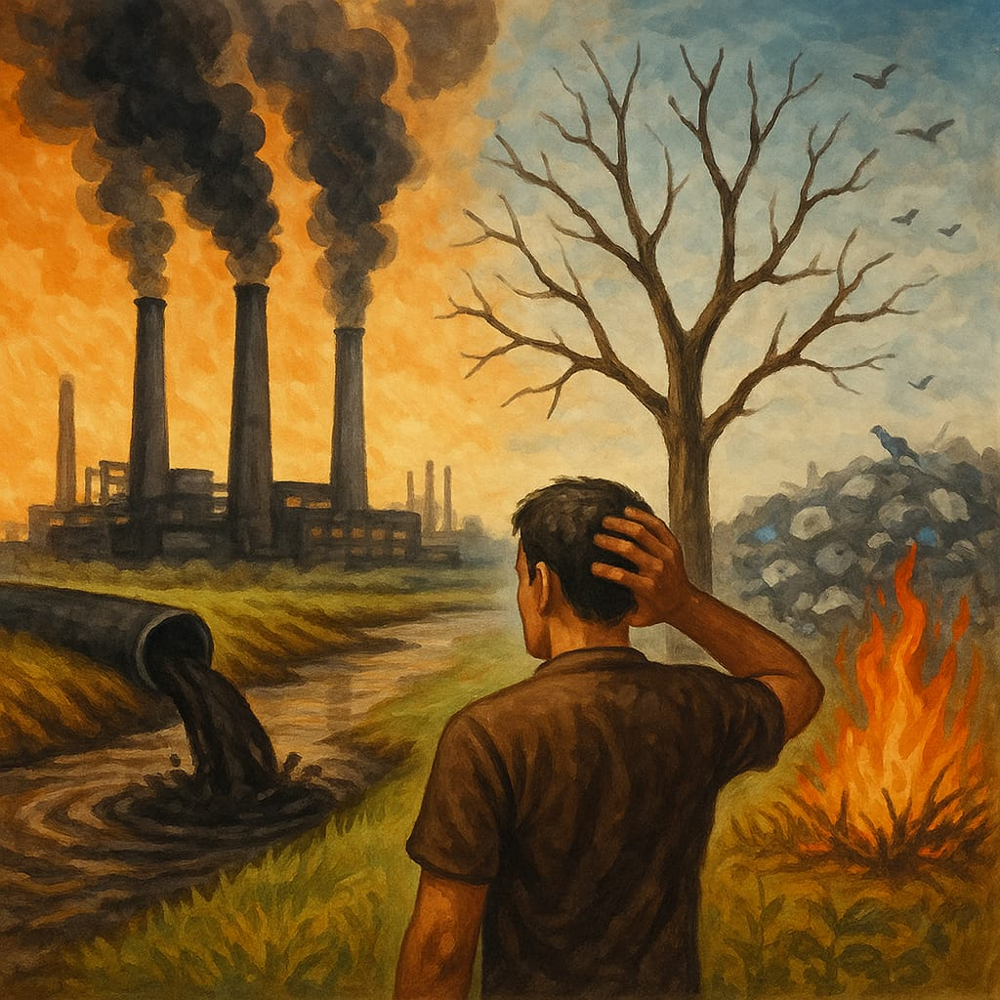

📜 Segundo dados do Fórum Brasileiro de Segurança Pública, uma mulher é vítima de violência doméstica a cada 2 minutos no Brasil.
📜 Segundo dados do Fórum Brasileiro de Segurança Pública, uma mulher é vítima de violência doméstica a cada 2 minutos no Brasil.
📜 A Lei Maria da Penha (Lei nº 11.340/2006) é um marco legal no enfrentamento à violência contra a mulher, mas ainda enfrenta desafios na efetivação de suas medidas.
📜 Campanhas sociais e a educação são fundamentais para desconstruir padrões culturais que naturalizam a violência de gênero.
✍ Desenvolva uma redação dissertativo-argumentativa, apresentando causas, consequências e possíveis soluções para o problema da violência doméstica e do feminicídio no Brasil.

📜 Relatórios da ONU alertam para o aumento do aquecimento global devido às atividades humanas.
📜 Relatórios da ONU alertam para o aumento do aquecimento global devido às atividades humanas.
📜 Desmatamento, poluição e exploração de recursos naturais são grandes vilões ambientais.
📜 A sustentabilidade e o consumo consciente são caminhos para mitigar os impactos.
✍ Produza uma redação dissertativo-argumentativa sobre como a ação humana tem impactado o meio ambiente e quais medidas podem ser tomadas para reverter esse quadro.